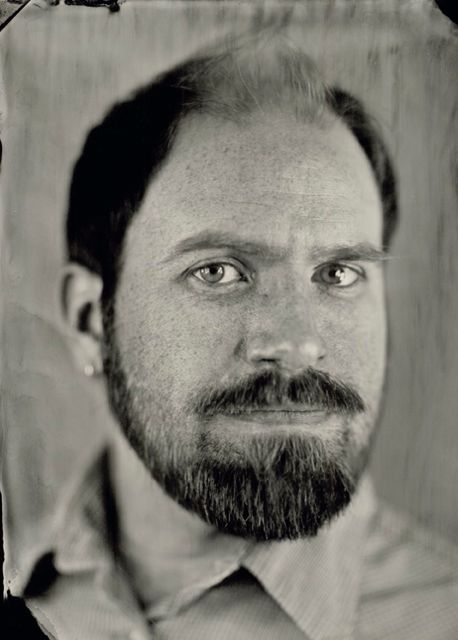

Markus Bergman holds a Master of Oriental Medicine, the terminal degree in the field of Oriental Medicine recognizing the completion of both Chinese and Japanese styles of acupuncture, as well as Chinese herbal medicine tracks, from The New England School of Acupuncture (NESA) in Watertown, Massachusetts. The MAOM track requires three years of year-round study resulting in over 900 clinical hours and over 2,000 didactic hours of study. Established in 1975 by Dr. James Tin Yao So, NESA is the oldest and one of the most prestigious schools of Oriental Medicine in the United States. Markus is also a certified Diplomate of Oriental Medicine having passed the required exams administered by the National Certification Commission for Acupuncture and Oriental Medicine and is currently licensed to practice acupuncture in the state of Washington.
Markus interned at The Wellness Center, a site specializing in treating residents and graduates of residential detoxification centers and halfway houses operated by Victory Programs for clients recovering from substance abuse; Dimock Community Health Center, a public health clinic that has been nationally recognized for its outstanding primary health care programs serving the needs of a frequently underserved population; Mt. Auburn Hospital's Center for Women, an outpatient clinic where men and women are referred for acupuncture by midwives, OB/GYN and primary care doctors. The majority of female patients who come to the Center for Women seek treatment to induce labor or to address a breech presentation, nausea or musculoskeletal problems. Markus also interned at the New England School of Acupuncture Clinic, which serves a diverse population of patients.
Markus holds a bachelor's degree in Contemplative Psychology from Naropa University in Boulder, Colorado where he found early instruction on the intersections between mind and body.